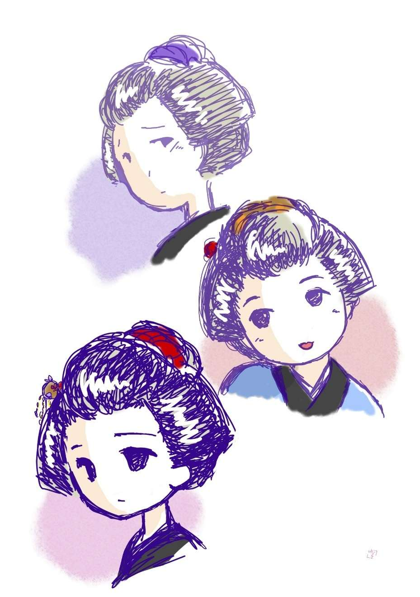

| 二度死んだ男: 銭形平次捕物全集第74話 (銭形倶楽部) | |
| 野村胡堂 | |
| ZENIGATA CLUB (2018) | |
一
「親分、良庵 さんが来ましたぜ」
「へエ、------朝から変った人が来るものだね、丁寧に通すがいい」
銭形の平次は居ずまいを直して、客を迎えました。服部 良庵という町内の本道（内科医）、頭を円めた五十年輩、黄八丈に縮 緬 の羽織と言った、型の如き風体です。
「親分、さっそくだが、大徳屋孫右衛門が死んだことはお聞きだろうね」
良庵はろくに挨拶もせずに、キナ臭そうな顔をするのでした。
「聞きましたよ。それが何うかしましたかえ？」
「どうもしないから不思議なんで」
「ヘエ------」
「大徳屋さんは大夫な人だから、私を招 んで身体を診せるのは、せいぜい三年に一度、五年に一度くらいのものだが、お酒の席や往来では、月に二三度ずつ逢っている。現に昨日も昌平 橋 ですれ違って、機嫌の好い挨拶を聞いて別れたばかり、まさか、あれほどの元気者が、一と晩のうちに冷たくなろうとは思わなかった」
「すると？」
平次は膝を進めました。
「早合点をしちゃいけない。ね、親分、私は今死骸を診 て来たばかりなんだが、変死でないことだけは確かで」
「------」
「殺されたわけでも、自害したわけでもなく、卒中 でポックリ逝 ったに違いないが、どうも、私には腑 に落ちないことがあるんでネ。兎も角、親分の耳に入れて置けば、後で何か面白くないことが起った時、私の言ったことを思い出して下さるだろうとこう思ってな」
服部良庵はつままれたような調子でした。が、後になって考えると、さすがに長い間の経験と、専門家らしいカンで、大事件の匂いを、この時から嗅ぎ出して居たことに思い当りました。
「腑に落ちない------にもいろいろあるだろうが、一体どこが何う腑に落ちなかったんで？」
「胸をはだけて見ると、身体がびっくりするほど瘦せていたのが第一の不思議さ」
「------」
「それに、あんな洒落者 が、死顔を見ると不精 髯 だらけ、その上、白 髪 染 が流れ落ちて、小 鬢 が真っ白だ------四十になったばかりの孫右衛門さんに白髪があろうとは、この私でさえ気が付かなかった位だから、もう少し上等の白髪染を使って居そうなものだが」
「それから？」
「昨日逢った時あんなに元気だったが、死顔を見ると------尤も死顔は相 好 の変るものだが、------十 歳 位は老けていたよ」
良庵の言うことは取止めもありませんが、とにかく、大徳屋孫右衛門の死に、一抹 の陰影があることは疑いもありません。これだけの報告を済ませると、良庵は、気が軽くなったように、そそくさと帰って行きました。
「八」
その後を見送って、平次は隣の部屋に遠慮しているガラッ八の八五郎を呼びます。
「へエ------」
「聞いたろうな」
「障子一重だもの、耳でも塞 がなきゃ聞えますよ」
八五郎はニヤリニヤリと膝で這い寄りました。
「それなら言うことはあるめえ、------気の毒だが、また葬い へ行ってくれ」
「やけに葬 えが流行 るんだね。行きますよ、行くには行きますが、------何を嗅ぎ出しゃいいんで？」
「良庵さんのような、物事に馴れた医者が、折角あんなに言ってくれるんだから、念のために皆なの顔色でも見て来るがいい------こんな霜 枯 時 には、葬い酒に酔うのも、酒 落 れて居るぜ」
「ヘッ」
八五郎は平手で額を叩きながら、それでも素直に出かけて行きました。
大徳屋孫右衛門というのは、お蔵前札差衆の一人、先代までは大町人中でも手堅い家風を褒 められましたが、孫右衛門の代になると、商売よりは遊びの方が面白くなり、雑 俳 、楊弓 、藤 八拳 から、お茶も香道も器用一方で噛 り廻ると、とうとう底抜けの女道楽に落ち込み、札差の株を何万両かに売り払って、吉原に小判の雨を降らせるという大通気取りの狂態でした。
お蔵前から引越した、松永町の家にだけでも、お柳、お辰、お村と妾が三人、本妻のない気楽さと、諫 め手のない無軌道さに、天も恐れず、人にも愧 じぬ暮しを続けて居たのです。
二
「親分、驚いたぜ」
「どうした八、孫右衛門が化 けて出たか」
「そんな洒落れた話じゃねえ」
ノソリと宵のうちに帰って来た八五郎、苦い顔をして平次の前へ、長 火 鉢 を挾みました。
「酔った様子もねえが、------解った、お通夜 に酒の出ねえのが気に入らなかったんだろう」
「それどころじゃねえ。酒は浴びるほど出たが、------あれを見せられちゃ呑む気はしねえ」
「どうしたんだ」
「まア、聞いておくんなさい、こうだ。親分」
「フーム」
ガラッ八の話は別に変ったことではありません。躾 けもたしなみもない人達の間に、何万両という大身代を遺された浅ましさを、唯まざまざと描 き出しただけのこと------
「ね親分、主人が死んだというのに、涙を流しているのは、風 邪 を引いた猫の子一疋だけとは驚くじゃありませんか」
「------」
「町内の衆は二三十人来ているが、朝っから、まるでお祭り騒ぎだ。酒屋から菰冠 を取寄せて、中には歌を唄ってるのもある」
「家の者は何うしたんだ」
「それが面白いんで------甥 の千代次郎と、番頭の才吉と、妾 が三人、それに大徳屋へ三年前から入り込んで、支配人見たいな、幇 間 見たいな事をしている浪人くずれの草間六弥、これだけの人間がお互に睨み合って、一文も余計なものは取込ませまいとするから、果 し眼 で口も利かない------そんな風だから、仏様の傍 なんかへ、寄り付く者もありゃしません。浪人くずれの草間六弥だけが、時々お棺 の前へ行って、線香を立てては湿 っぽい顔をして来るだけ」
「------」
「一人の身体が動くと、五六人の眼が動く。一人が立ち上がると、五六人ゾロゾロ跟 いて行く。慾と慾が、家の中へ旋風 を巻いて居るようなもので、あんな厭なお通夜は見たこともありませんよ。その癖死んだ孫右衛門は、------俺が死んだら、困る者はうんとあるだろう。第一五丁町は暗くなる------と言って居たんだそうで、あれを見ると、人間死んじゃつまらないと思いますよ」
ガラッ八が、つくづくそんな事を言うのです。
「まアいいやな、どうせ金持にも大通 にもなれるお互じゃねえ」
「今日ばかりは、貧乏に生れ付いて良かったと思ったぜ。アア厭だ厭だ」
「何を言やがる、質の流れ月が来る度に、------金持に生れりゃ良かった------って言ったじゃないか」
平次は半分茶化しながら聞いて居りました。
「あんな浅ましい図に比 べりゃ、腐った袢 纒 の一枚や二枚流したって惜しいとは思わねえ」
「ハッハッ、大層悟 りやがったな」
二人は沁々とした心持で笑いました。が、事件はこれがほんの端 緒 で、この後につづく恐ろしい発展は、全く笑いごとではなかったのです。
その晩真夜中過ぎ------。
「親分さん、た、大変です、すぐ願います」
息せき叨って戸を叩く者があります。
「誰だい」
裏淋しい心持で、親分の家へ泊り込んだ八五郎は、居候並に入口の二畳に敷いた床の中から鎌 首 をもたげました。
「大徳屋からまいりました、大変なことが------」
「どうしたッてんだ」
てっきり遺産争いが嵩 じて、妾三人が掴み合いでも始めたのだろう------そんな図を頭の中に描きながら、ガラッ八はまだ床の中でモゾモゾして居りました。
「旦那が殺されたんです」
「何？」
「匕首 で突殺されたんです」
「何だと？ どこの旦那が殺されたんだ」
「大徳屋の主人が、------孫右衛門で」
「馬鹿野郎、人の寝入ばなを起しやがって、飛んでもねえ野郎だ。大徳屋の主人なら、昨夜 のうちに卒中で死んで、今晩はお通夜じゃないか。棺の中にいる仏様を、匕 首 で突殺す奴があるものか」
何処かの悪童の悪戯 と合点して、ガラッ八はポンポン言い乍 ら床の中へもぐり込みました。
「本当ですよ、親分、旦那が殺されたんですよ」
外から叩く拳 は少しも休みません。
「手前は誰だ」
平次も奥から起きて来ました。
「大徳屋の奉公人ですよ、勘次というんで」
「あの小僧さんか、------それじゃ満更 嘘じゃあるめえ、八、戸を開けてやるがいい」
「ヘエ------」
三
大徳屋は煮 えくり返る騒ぎでした。棺の中に納められて、ろくに線香をあげる人もない心細い有様であったにしても、とにかく一度は確かに死んだ筈の主人孫右衛門が、平常 着 のまま、仏間の後ろの暗い廊下で、後ろから匕首で、左 肩胛骨 の下を縫われ、紅 に染んで死んで居たのです。
見付けたのは小僧の勘次、十七になったばかりの生真面目さで、こればかりは酒も呑まず、遺産争 いの渦巻へも入らず、裹淋しく人目を避 けて居ると、仏間の後ろから、唯ならぬ悲鳴、おどろいて飛んで行った真ッ暗な廊下で、バッタリ人に突当りましたが、その袖の下を掻 潜 るように五六間来ると、ちょうど唐紙の隙間から漏れる灯の中に主人の孫右衛門、血潮の中に断末魔のうごめきを続けて居たのでした。
勘次の声に、お祭騒ぎも、遺産争いも、一瞬にして吹飛ばされました。家の中を吹き捲 るのは、新しい不気味な嵐 、あまりの事に、腰を抜かすもの、鮒 のように口を動かすもの、一所懸命這い出そうとするもの、しばらくは無言の混乱が続くばかり、新しい死骸に近づこうとする者がないばかりでなく、棺の中に納めた筈の、主人の元の死骸を確かめようとする者もありません。
その中から、勘次は飛出して来て、平次に救いを求めたのでした。
平次とガラッ八が大徳屋へ行った時は、さすがに一通り騒ぎは落着いておりましたが、それでも、町内の衆は半分ほど逃げ帰り、家の者は、遺産争いとはまた別の心持で睨み合って居りました。
「あ、親分、ちょうどいいところへ」
一番先に冷静を取戻したのは、さすがに浪人くずれの草間六弥です。
「大変な事があったんですってね、まず仏様を見せて貰いましょうか」
眼ばかり光らせている男女を尻目に、平次とガラッ八はいきなり仏間に通りました。型の如き逆 さ屏風 、香 華 、それに思いの外貧弱な供 物 の中に、なんの異状もなく据えられた棺へ、平次の手は掛ります。
蓋 を開けると、
「あッ」
ゾロゾロと跟いて来た人達は、思わず声を立てたのも無理はありません。
棺の中は空っぽ------と思いきや、昨夜卒中で死んだ主人の孫右衛門が、白い経 帷子 を着たまま、入棺した時と少しの変りもなく、差し寄せた灯の中に、寂然として死顔を仰向けて居るのです。
平次はそれを確めると、横手の襖 を開けました。
「フーム」
そこは血の海、匕首 に縫われてもう一人の孫右衛門の死骸は、手を触るる者もなく横たわっております。
その位置と、傷口をほんの一と通り調べた平次は、元の仏間に取って返すと、不安と焦躁 に、遠卷の顔を一とわたり見廻してから、
「草間さん、ちょいとお顔を」
一番後ろの方に、落着払って差控えた、草間六弥に声をかけました。
「私も話したいことがある、どうぞ此方へ」
草間六弥はたって奥の一と間へ導 き入れます。四十五六の少し肥った男で、髪形も着物の好みも、すっかり町人風ですが、物を言わせるとまだ何処かに、武士らしい角 々 が残って居ります。
二人は行燈 を挾んで、立会前の剣士と剣士のように、------でもさり気なく相対しました。
「承 りましょうか、草間さん」
平次は初太刀を入れます。
「何から話したものであろう」
「第一に、あの棺の中の仏棣の素姓は？」
「土手の煮 売 屋 の親爺 、綱屋の綱七------この家 の主人によく似て居ると言われ、平常 から孫右衛門殿が贔屓 にしてやって居たが」
「綱七なら五十以上の筈だが------成程、小 鬢 を墨で染めたのはそれを隠すためですね」
「その通り、さすがは平次親分、目が届くね」
「褒めちゃいけません」
「でも、私が何も彼も知っていると睨んだのはエライ」
「この作者 は、草間さんに決って居ますよ、皆んなお祭騒ぎをしたり、形見分けに睨み合って居る中で、殊勝らしく湿 っていたのは、お前さんばかりだったと言うじゃありませんか、------それに、棺の蓋をあけて、中の仏に変りのないのを見て、皆んな胆 を冷やした中で、少しも驚いた様子のないのは、草間さんばかりだ」
「もう一人、真物 の主人を殺した下手人は驚かなかった筈だが」
「いえ、そいつはわざとのけ反るほど吃驚 したかも知れませんよ」
「そう言ったものかも知れぬな」
平次の打ち解けた調子に、草間六弥も何となく心持がほぐれた様子です。
四
「昨夜 ------宵のうちのことだが、土手の綱七の死んだ話を吉 原 で聞くと、主人の孫右衛門殿は、大変なことを思い付いたのだ------」
草間六弥は話し続けました。
大徳屋孫右衛門は、金を湯水の如く費う者の慣 わしで、この世の中に、自分ほど人望のある者はなく、自分ほど有益な存在はないと思い込むようになって居たのです。
阿諛 と便 佞 と、安価な世辞に取巻かれて、それを阿諛とも便佞とも空 世 辞 とも気の付かぬ孫右衛門は、『俺が死んだら、さぞ皆んなが困るだろう』と思い込むのは当然のことでした。『五丁町は闇になるだろう』『三人の妾は身も世もあらぬ思いに歎き悲しむだろう』そして『家中の者は、追 腹 でも切りたい心持になるだろうし』『町内の衆は、光明を喪 ったように落胆するだろう』------
そう考えた末に、孫右衛門は、『もう一度生き返って来られるものなら、たった一日だけ死んで見たい、多勢の俺の讃 美 者崇 拝 者の中で誰が一番俺のために泣いてくれるだろう』------そう思いもし、腹心の草間六弥に漏 しもするようになりました。
何千両、何万両となくバラ撒 いた金が、人間の真情まで購 い得るものと、孫右衛門は思い込んで疑いもしなかったものです。
「綱七が死んだと聞くと、そいつが俺だったらと思ったに違いない。すぐ土手の煮売屋まで飛んで行って、投出した小判で三百両、綱七の棺へは石っころと古 蒲 団 を詰めさせ、死骸を貰って、夜中に松永町まで運んで来た。夜 泣 駕 籠 が腰を抜かすほど金をやって運んだ細工だから、手数はかからないが、------こんなイヤな仕事はなかったよ、それもこれも孫右衛門殿の物好きから始まったことで、私が作者などとは、飛んでもない、そればかりは、親分の前だが、鑑定 違 いというものだ」
「それから」
平次は静かにその先を促 します。
「着物を換えたり、鬢 を染めたり、床の中へ入れたのは真夜中過ぎ、主人の孫右衛門は、納戸 の後ろにある、小部屋に身を潜めて、それからまる一日様子を窺 った」
「手の混 んだ事をしたものですね、------それで本当に泣いたのは何人ありました」
「たった一人さ」
「そいつは面白い、誰です」
「この私さ、------あんまり情ないからだ」
「成程」
平次は笑う気にもなりません。
「町内の衆や遊び友達は、押かけて来てお祭のような騒ぎだ、吉 原 じゃ虻 が一匹死んだほどにも思わないだろう」
「------」
「それより気の毒なのは、三人の女だ、空涙一つこぼすどころか、横着 者 のお村などは、病気でブラブラして居たくせに、主人が死ぬと鼠鳴 をして喜んで居たし、お柳と来たひには、始終ゲラゲラして居た」
「------」
「番頭の才吉などは、朝から算盤 ばかり弾 いて、仏様の顏も見ようとはしない、お隣の加 積 屋 安兵衛などは、借金が棒引にでもなると思ったか、朝っから酒びたりで歌って居る」
「------」
「この様子じゃ、形見分けと身代の始末で、どんな騒ぎが始まるかも知れない。後取は甥 の千代次郎だが、気の弱い千代次郎にどれだけの物が遺 るか判ったものじゃない」
「------」
「この様子を、納戸に隠れて見て居た主人の孫右衛門、何べん飛出そうとして私が引止めたことか。どんなに口 惜 しがったか、死骸を見れば判るが、襟も袖も、滅茶滅茶に噛み破ったほどだ」
「------」
大方は察 したことですが、それでも草間六弥の細かい説明を聞くと、平次も笑えない気持になります。
「涙を流して口惜しがる主人を押えて、ともかくも今晩だけは無事に過させようとすると、やはり気になると見えて、納戸から飛出し、仏間の裹からお通夜の様子を覗いて居たのだろう、------其処を誰かが見付けて、後ろからズブリとやった。------これだけの話だ。本当に死んでしまっちゃ、孫右衛門殿も気の毒だ」
草間六弥は何も彼 も言ってしまって、ホッとした様子で顔を挙げました。
「で、下手人の心当りは？ 草間さん」
「それは判らない」
「それでは、主人が生きて居ちゃ困るのは誰で？」
「皆んなだよ、千代次郎も、才吉も、お柳も、お辰も、お村も、お隣の安兵衛も」
「草間さんは？」
「仏と勘次郎だけは、主人が生きていてくれた方がよい、主人が死ねば、番頭と仲の悪い勘次は明日にも追出されるかも知れず、------居候の俺は、自分から遠慮して身を引かなきゃなるまい」
「形見分けの指図 書 のようなものはあるでしょうか」
「ある筈だ、才吉が預っているだろう。身上 は千代次郎のもの、三人の女共には千両ずつ、才吉は三百両、あとの奉公人は五両三両ずつ貰う筈だ」
「草間さんは？」
「私には茶碗 が一つ、茶入が一つ、------それっ切りだ」
草間六弥の唇には、薄笑いが浮びます。
五
平次はそれから順々に家中 の者に逢って見ました。番頭の才吉は、
「ヘエ------、三百両のお形見を頂くことにはなって居りますが、旦那が亡くなれば禄 に離れます。この先どうしていいか、途方に暮れましたよ」
そう言って、慎 み深い目を挙げました。三十五六の一寸好い男、蔵前時代から十五六年も孫右衛門に仕 えたそうで、見かけ以上に手堅そうです。
「草間さんは茶碗一つ茶入一つしか貰わないと言うから、三百両は少ないわけじゃあるまい」
「ヘエ------」
何やら不満らしい声です。
「何か言いたいことがあるんじゃないのか、番頭さん」
「別に、ございません、でも親分さん、あの茶碗と茶入は主人が自慢の品で、三百両はおろか三千両でも買えません」
「成程」
「こんな事を私が言ったとは仰しゃらないように願います。元が武家だけに、あの人には怖 いところがごさいます」
「よしよし」
平次はそれ以上に追及 しませんでした。
次に呼出されたのは、小僧の勘次です。
「小僧さん、先刻は御苦労」
「ヘエ------」
「ところでお前、悲鳴 を聞いて駆込んだとき、廊下で人に突当ったというが、それは男かい、女かい」
「男ですよ、親分」
「どうして男と解った」
「カンで解るじゃありませんか、いきなり突当っても、ヨロリともしなかったんですもの」
「誰だか、見当はつくかい」
「それが」
勘次は首を捻 りました。
「背は高かったんだね、------お前が袖の下を潜って向うへ行ったと言うくらいだから」
「ヘエ------」
「背の高い男というと誰だい、才吉は小男だし、草間さんは肥った方で、千代次郎は中背の華奢男 、お隣の安兵衛は高いな」
「違いますよ、親分。出会頭、私の頭が向うの胸に当った心持は、どうも木綿 物 じゃなかったようで------」
「と？」
絹物を着ている男というと、千代次郎か草間六弥の外にありません。平次は併 し話 頭 を変えました。
「お柳とお辰とお村の三人のうち、どれが一番主人の気に入っていたんだ」
「お辰ですよ」
一番若い十八九のお辰が孫右衛門の寵 を一身に集めたことは考えられます。

「一番気に入らなかったのは？」
「お村かしら？」
それは少年勘次に解らなかったでしょう。
「三人のうちで、一番力のあるのは」
「お柳でしょう、------踊の師匠 だったって言うけれど、あんなに肥って大 柄 ですもの」
「そんな事でいいだろう、次は千代次郎を呼んでくれ」
「ヘエ------」
入れ違いに甥 の千代次郎、これは二十五六のお店 者風の男ですが、ガタガタ顫えるぱかりで、何を訊いても埒 があきません。
「この身上がお前のものになるそうじゃないか」
「へ、ヘエ」
「叔父さんを誰が殺したか、見当が付くかい」
「へ、ヘエ」
「一度死んだ人が又殺されたのを見て、どんな心持だったい」
「へ、ヘエ」
平次は諦 めるより外に仕方もありません。真物 の孫右衛門を幽霊と間違えて、無我無中で剌したのならこの男に間違いありませんが、それにしては下手人の手際が良過ぎます。悲鳴の後で廊下にマゴマゴして居たにしても、勘次に突当られて引くり返らないだけの土台が、この男にあろうとは想えなかったのです。
この時、
「親分」
ガラッ八の八五郎が顎 を出しました。大分収穫 のありそうな顎です。
「此方へ入れ」
千代次郎を帰して、平次の顔は憂欝です。
「匕首 は草間六弥のものですよ。尤も近頃は棚の上のガラクタ箱の中へ投り込んだままだった------て言いますが」
「才吉の費い込みは？」
「二十や三十はあるかも知れませんが、大したことはないようで」
「悲鳴の聞えた時、表の方に顔の揃 っていたのは誰と誰だ」
「不思議なことに皆んな表にいましたよ、千代次郎も、才吉も、お隣の安兵衛も、勘次も」
「草間六弥は」
「これは仏間に居たそうで、------間違いはありません、証人は近所の衆が二三人------」
「女三人は？」
「三人とも奥にいたそうですから、やればこの三人のうちの一人ですよ」
ガラッ八は物事を簡単に片づけます。
「だが、女にあんな事が出来るかな、死んだと思った主人が生きているのを見たらその場で腰を抜かすか、目を廻すのが精一杯だろう」
「女三人のうちの一人でなきゃ、二人組んでやったとしたらどうでしょう？」
「妾同志 がかい、------それもあッと言う間に気が揃うかい」
「成程な」
「道具箱から匕首 を持出して、主人の幽霊 を突殺す胆っ玉は大抵じゃないぞ」
「すると親分」
「まア、考えさしてくれ、俺にはますます判らなくなって来たよ」
平次は深々と腕を拱 きました。
「それから、女三人の身持も手一杯に聞いて見ましたよ」
「どうせろくな事はあるめえ」
「難のないのは一番若いお辰だけ、あとは勝手なことをして居ますぜ。主人が死ぬと近所の衆は遠慮がないから何も彼もズケズケ話してくれます」
「------」
「お柳は今じゃあんなに肥っているが、踊りの師匠上がりで、今でも塀 外 に一人や二人昔の狼連 がウロついて居ない日はないという恐ろしい女、------尤も肥ってはいるが、ちょいと可愛い顔だね、親分の前だが」
「何をつまらない」
「お村は病身で、二三日前から寝て居たそうです。それに御家人崩れの凄いのが付いているんだそうで、年増だけに世帯のたしに奉公しているんだって言いますぜ、いずれそのうちに、大徳屋がうんと取られるところだったろう------って言いますよ」
「お辰は？」
「親分が会って訊いて下さい。思いの外、あんなのが許婚 か何か持って居るかも知れません」
「それで宜かろう。それから、今日一日のうちに、コロリと様子の変った人間はないか、それを訊き出してくれ。朝燥 いで居て、昼から滅 入 ったとか、昼まで滅入って居て、夕方から元気になったとか、------ともかく、真 物 の主人が殺されるまで一日の間に、様子の変った人間はなかったか、男でも女でも構わない、それを搜してくれ」
「親分、そいつはむずかしいね」
そう言いながらもガラッ八は、元の店の方へ取って返しました。
六
女三人の調べには、平次もさすがに手を焼きました。
「お柳と言ったね」
「ヘエ------」
よく肥った、見事な恰幅 、そのくせおち澪 れるような艶 めかしさ、踊で鍛 えた二十三の美女は、全く形容のしようもない妾型の女でした。
「勘次と廊下で鉢合せをしたそうじゃないか」
平次は鎌 をかけました。
「驚きましたよ、あの時は、いきなり暗闇 から飛出すんですもの」
お柳は何の細工もありません。
「何をして居たんだ」
「自分の部屋へ行って、羽織 を引っかけて来たところでしたよ、夜更けになると、薄寒くなりますんでねエ」
「悲鳴は何処で聞いたんだ」
「勘次と鉢合せをする、ほんのちょいと前でしたよ。五六間後ろの方から何とも言えない変な声がしました」
「何んな声だった」
「カッと言ったような、キャッと言ったような」
「やって御覧」
「まア、親分さん」
どうも少し扱 いにくい女です。
次はお村、二十五六の年増で、少し華奢 な女ですが、昔はさぞ美しかったであろうと言った程度の魅力 しかありません。------孫右衛門の寵 が衰えて居たというのもそんな為でしょう。
「お前はあの時どこに居たんだ」
「頭痛がして、部屋に休んで居りました」
「主人が死んで、どう思う？」
「さア------」
何か一と皮も二た皮も剝 がなければ、本当の心持の判らないと言った種類の女です。
「主人が生きて納戸に隠れて居ることを知って居た筈だが」
「いえ、そんな事は少しも知りません」
お村の顔は急に引締りました。
最後に若いお辰は、おどおどしながら平次の前に坐って居りました。たった十九になったばかり、色白の可愛らしい娘で、こんな奉公をするのが痛々しい位。
「お前はいつから此処に来ているんだ」
「三月ほど前からでございます」
「家は？」
「市ガ谷」
「両親はあるのかい」
「母と弟だけ居ります」
「主人が死ねば、すぐにも家へ帰りたかろう」
「------」
黙ってうなずきました。簪 がキラキラと揺 れます。美しい顔、匂う襟元、平次も何か押して物を訊く気もなくなります。
「あの悲鳴 は何処で聞いたんだ」
「------」
お辰は顔を挙げました。唇は動きますが、声は出ません。
「あの主人が殺された時の悲鳴は何処で聞いたんだ。------その時お前の居た場所が判らないと、お前も疑いを受けることになるが」
助け舟のつもりで、平次がこう言ったのはよくよくの事でしょう。
「主人の声は、あの何にも聞きません」
お辰の答は予想外でした。
「皆んなが、悲鳴を聞いたと言うぜ」
「それは、あの、私だったかも知れません」
「えッ」
「あのとき奥から店の方へ行こうとして、仏間の裹の廊下を通ると、不意に------」
「------」
お辰は固唾 を呑みました。
「不意に、死んだと思った旦那様に逢ったんですもの、------私は思わず、声を出したような気がします」
「幽霊と思ったのか」
「え、あんまり驚いて、転げるように自分の部屋へ戻りました。それっ切り、しばらくは何にも知りません」
ありそうな事です。が、悲鳴を挙げたのがお辰だったとすると、今まで提供 された不 在 証 明 にいろいろの支障が起ります。
「それは大変なことだ、------その時主人は確かに生きていたんだね」
「え、幽霊と思い込んで逃出しましたが、私の顔を見て、何か言った様子でした」
「よしよし」
平次はこの娘からこれ以上何にも訊くことのないのを見て取りました。あまりにも正直で、あまりにも駈引のない態度です。
七
「親分、判りましたよ」
「何だ、八」
「先刻 言い付けたじゃありませんか、昼と夜とで、様子の変った人間ですよ」
平次の無関心な態度が少し八五郎をうろたえさせました。
「忘れたわけじゃない、此方にも大変なことがあったんだ」
「ヘエ------、何んなことで？」
「お前の方から、訊こう。誰だい、昼と夜とで様子の変ったのは？」
「お柳ですよ」
「なに」
「あの踊の師匠ですよ。日の暮れるまで、お花見の前の日見たいに浮かれ切って居たのが、夜になってあっし が帰ってから急にしおらしくなって、線香を上げたり、念仏を称 えたり、時々は棺 の前へ行って、泣いて見せたり、大変な芝居だったそうですよ」
「そんな事だろうと思った、もういちどお柳を伴れて来てくれ」
「ヘエ------」
ガラッ八は横っ飛に飛んで行くと、こんどはお柳の手を取ってグングン引っ張って来ました。
「あれお前さん、痛いじゃないの、------私は何にも知りゃしませんよ、あれッ」
「何を神妙 な悲鳴なんかあげるんだ、痛きゃ素直にあんよをしな、ブラ下がるから引 摺 ることになるじゃないか」
「お前さん無理だよ、そんなに早く歩けやしない」
「踊の師匠のくせに、あんよが上手もねえもんだ。まごまごしやがると、縛 り上げて引っ担 ぐぞ」
「あッ、親分」
八五郎の剣幕におどろいたか、お柳はようやく立ち直って、平次の待っている部屋まで辿 り着きました。
「お柳、冗談やおどかしじゃないぞ。主人殺しの疑いはお前に掛っているんだ」
「親分」
お柳はさすがに胆を潰したものか、平次の前にヘタヘタと坐ります。
「主人の生きて居るのをお前は見た筈だが、何処で見た」
「親分さん」
「嘘 を吐くと大変なことになるぞ」
「納戸へ入ると、------死んだと思った主人がいるんですもの、驚くじゃありませんか、親分」
「それは何時のことだ」
「八五郎親分が帰ってから間もなく、戌刻 少し過ぎでした」
「それで、あわてて殊勝らしい顔をしたのか。呆れた女だ」
「でも、親分」
お柳の身体はまたクネクネと媚態 を作ります。
「それを誰に話した」
「誰にも言やしません。言うものですか、大事な事ですもの」
「それじゃ孫右衛門殺しは手前 だ」
「えッ」
「悲鳴を聞いてから引っ返して主人を一と突きにし、廊下で勘次と鉢合せをした筈だ」
「違いますよ、飛んでもない。あんな結構な主人を殺していいものですか、------それに悲鳴を挙げた時はもう、旦那は刺 されて居るじゃありませんか」
「いや、悲鳴は主人じゃない、お辰だ。主人はあの後で刺されたのだ」
「それじゃお辰ですよ、------孝 行 面 をしやがって、あんなイヤな女はありゃしない。主人に可愛がられながら、一番怨 んでいたお辰が、主人を殺したに不思議があるものか」
お柳は嵩 にかかって言い募ります。平次はこの女の口から、まだまだいろいろの事が引出せそうな気がしました。
「いや、お辰は主人の生きて居るのを知らなかった筈だ。匕 首 を用意する暇はない」
「いえいえ、お辰は勘次に聞いたに違いありません。畜生ッ、何てイヤな奴だろう」
「勘次も知ってる筈はない」
「私が教えましたよ。そっと、あの子にだけ、------それを勘次の野郎、お辰に吹き込んだに違いありません」
「なるほど、勘次なら孫右衛門を刺す隙 があった筈だ。八」
「ヘエ------」
チラリと目配せ、八五郎はそのまま飛んで行きました。
八
平次はこの時ほど厭な思いをしたことはありません。大徳屋の家の中で、一番可愛らしい少年勘次を主殺しの罪で縛るのは、平次に取っては、全く我慢の出来ないことだったのです。
主 殺 しは動機の如何にかかわらず、磔刑 の極刑に処せられるのが、その当時の不文律でした。平次はそのまま逃出したい衝動 に悩みながら、眼をつぶって事の成行を待ちました。
「親分、つれて来ました」
眼を開くと、ガラッ八は勘次の肩先を押えるように、畳の上に引 据 えます。
「勘次、飛んでもねえ事をしてくれたなア」
平次の声には涙がありました。
「親分、あっし じゃありませんぜ」
「何？」
勘次は少年らしく引締った顔を挙げました。
「あっし は旦那が生きて居ると聞いて、一と思いに殺すつもりで、刃 物 まで用意しました------でも、悲鳴を聞いてあっしが駆け付けた時は、旦那はもう殺されて居たんです」
「何だって主殺しなんか考えたんだ」
「お辰さんが可哀想です。あの人は親孝行で町内の評判者ですよ。旦那がお金を積んで買って来たのを私はよく知って居ます------同じ市ケ谷で生れたんですもの。お辰さんは毎日泣いて居ましたよ」
「お前とお辰は幼 な馴染 と言うわけだな」
ガラッ八も妙に和 やかな口を挾 みました。
「それで主人を殺す気になったとは、一応尤ものようだが、よくない心掛けだぞ」
平次は苦い顔を見せます。
「へエ------、でも本当に殺さなかったんです」
「証拠はあるのかい」
「この匕首 を見て下さい。------宵のうちに奥から持出したんです。血なんか附いちゃ居ません------これを持って飛込むと、もう旦那は殺されて居たんです」
懐から出した小刀 ほどの小さい匕首、拔いて見ると、なるほど血も何にも附いては居ません。
「こんなものを、何だって捨てずに持って居たんだ」
「あわてたんです。旦那が殺されているのを見ると、自分が殺そうとした事をすっかり忘れて、今ようやく思い出した位ですもの」
「親分、これは一体どうしたことでしょう」
ガラッ八も妙にこの少年が可哀想になったのでした。
「------」
平次は黙り込んでしまいました。
時は過ぎ行きます。何時の間にやら夜が明けて、まだ閉 めたままの雨戸の隙から、キラキラと朝の光が射し込んで来るのに、面喰らった奉公人達は、まだ雨戸を開けようともしません。
「八、雨戸をあけて、一服やって見ようか、そんな事でもしたらまた新しい知恵が浮かぶかも知れない」
「------」
行燈 の灯で煙草 を喫付けている平次を後ろに、ガラッ八は二三枚雨戸を繰りました。
サッと流れ込む朝の光。
「良い心持だな、八」
「親分、あれを見て下さいよ。大変なものがありますぜ」
「何」
八五郎の指す方を覗くと、戸袋の下に据えた大自然石の見事な手 水 鉢 、その上に掛けた手拭に、水にぼけた血の痕 らしいものが附いて居るではありませんか。
「昨夜は誰も死骸に手を掛けなかった筈だな」
「気味を悪がって、寄り付いた者もありませんよ。揃いも揃って薄情な奴らで」
「と、あれは下手人が匕首 で剌した手を洗って拭いたものに違いないわけだ」
「まア、そんな事で」
近く寄って見ましたが、それ以上は何にも判りません。
「おそろしく落着いた奴だな。勘次やお辰の芸じゃない。雨戸を開けて手を洗って、済まして居たんだ」
「雨戸にも血が附いちゃ居ませんか」
ガラッ八は飛付くように雨戸をしらべましたが、よほど用心深く開けたものと見えて、そこには何の痕もありません。
「待て待て、主人の殺されたのは、お辰が悲鳴 を挙げて、お柳と勘次が鉢合せをする迄の間だ。------その間仏間の裏の廊下へ行ける人間は------」
「------」
「解った、八」
「え？」
「お村だ」
「お村は自分の部屋で休んで居たと言ったじゃありませんか」
「嘘だ」
「お村の様子も顔色も、朝から夜まで少しも変らなかったと言うのは？」
「お村は、主人の生きている事を知っても、お柳と違って様子や顔色を変える女じゃない。頭痛がすると言って奥へ引込んで用意をし、お辰の悲鳴を聞いて、物蔭から飛出して孫右衛門を刺したんだ」
「でも」
「いや、他に人間は居ない。お辰か勘次かお村のうちだ。------女では幽 霊 を刺せまいと思ったのも間違いだったが、孫右衛門が生きているのを見たら、少しは様子や顔色が変るだろうと思ったのが第一の間違いだ」
「------」
「滅多 な事で様子や顔色を変えない女、------相手が幽霊になっても死骸になっても、刺殺し兼ねない怨 を持った女もある事を忘れて居たのだよ」
「------」
平次は八五郎を説き伏せるというよりは、自分自身を説き伏せるように言い切りました。自分で組み上げた間違いの構 図 を叩き壊 して、新しい本当の構図を築 き上げるためには、斯うでもするより外はなかったのでしょう。
「今度は間違いはないぞ。来い、八」
× ×
お村は朝の化粧 に余念もないところを縛られました。次第に衰えて行く容色のために、主人孫右衛門の愛を喪 ったお村は、孫右衛門の生きているのを発見すると、最後の運命を匕 首 一ふりに賭 けて、一千両の形見分けを狙ったのですが、御家人くずれの男の許へ走る前に、平次の慧 眼 に見破られてしまったのです。
「親分、変な捕物だね」
帰る朝の街で、八五郎は話しかけました。
「捕物はつまらぬえが、自分の死んだ後の人気を見ようとした、孫右衛門の心持の方が余っ程面白かったよ」
「其処へ行くと、こちとら は金で買った人気じゃねえから有難いね。死ぬと本当に泣いてくれるのが二三人はあるぜ」
ガラッ八の顎 の長さ。
「向柳原の叔母さんは解って居るが、あとの二人は誰と誰だい」
と平次。
「一人は銭形の親分さ」
「馬鹿野郎、俺は泣くものか」
「あとの一人は言わねえ方がいい、言うと殴られそうだ」
「明神様の森の烏 だってね、ハッハッハッ」
平次の笑い声は、始めて朗々 と響きました。
（編注）
作品中には、身体の障害や人権にかかわる、差別的な語句や表現が見られますが、本書が成立した当時の時代背景等が現代とは異なる古典的な文学作品でもあり、著者が故人でもありますので、底本のままとしました。ご理解、ご諒承のほどをお願い申し上げます。
著者---野村胡堂
挿絵---萩 柚月 © 2017
初出---「オール讀物」昭和十三年四月号 文藝春秋社
底本---「錢形平次捕物全集」第四巻 河出書房 昭和三十一年六月三十日初版
編集・発行 銭形倶楽部